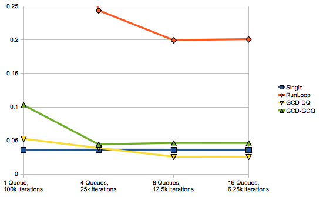

Please note: this article is part of the older "Objective-C era" on Cocoa with Love. I don't keep these articles up-to-date; please be wary of broken code or potentially out-of-date information. Read "A new era for Cocoa with Love" for more.
The overhead of spawning threads (a performance experiment)
In this post, I take a casual look at the relative performance overheads handling tasks in different ways: performing all tasks in the main thread, sending tasks to a single worker thread, spawning new threads for every task, and using Grand Central Dispatch (GCD). This won't be a particularly advanced investigation, simply a quick overview of simplicity versus performance in job management.
Introduction
I have a number of projects that need to support Mac OS X Leopard and iOS 3.x, so these projects cannot use libdispatch (aka Grand Central Dispatch).
In these GCD-free situations, I was curious to know what was the difference in overhead between properly setting up dedicated CFRunLoop-based worker threads and using a more haphazard spawn-a-new-NSThread-for-every-task approach. This post presents the results of that investigation.
I also included GCD results to compare with these traditional Cocoa threading approaches. There should be no surprises that GCD is much faster than any of the other threaded approaches. However there is also some interesting information regarding GCD queue configurations that can affect performance on different computers.
Test setup
The test is relatively straightforward:
- A number of job queues need to run.
- Each queue runs a number of jobs serially.
- The complete set of jobs are not known in advance — as each job completes, it adds the next job to the queue.
In the code, I've called the number of jobs that run on each queue "iterations" because there is actually only one job object per queue and it adds itself back to the queue as the next job.
The jobs themselves have no work to perform (other than decrementing the iteration count). The purpose here is purely to test the overhead of different job queuing and management approaches.
Queue implementations
SingleThreadedQueue
The single threaded queue simply adds all jobs to an NSMutableArray and runs them in the current thread in the order added.
This test involves no worker thread at all and is really the "control" case.
Running all the jobs involves looping until the queue is empty and running one job per iteration.
- (void)queueJob:(Job *)aJob
{
if (!jobQueue)
{
jobQueue = [[NSMutableArray alloc] init];
[jobQueue addObject:aJob];
while ([jobQueue count] > 0)
{
Job *nextJob = [jobQueue objectAtIndex:0];
[jobQueue removeObjectAtIndex:0];
[nextJob performIterationAndRequeueInJobRunner:self];
}
[jobQueue release];
jobQueue = nil;
}
else
{
[jobQueue addObject:aJob];
}
}The if (!jobQueue) condition around the other work exists to avoid recursion on the stack when the performIterationAndRequeueInJobRunner: method invokes queueJob: again to queue the next job.
RunLoopQueue
Running a dedicated worker thread is involves creating and starting an NSThread but then once the thread is started, you can add jobs to it with performSelector:
- (void)queueJob:(Job *)aJob
{
[aJob
performSelector:@selector(performIterationAndRequeueInJobRunner:)
onThread:runLoopThread
withObject:self
waitUntilDone:NO];
}DetachThreadQueue
The main point here is that we create a new thread for every job. We also need to have a thread entry point that puts an NSAutoreleasePool up (or other thread context that we may require) and runs the actual job itself.
- (void)queueJob:(Job *)aJob
{
[NSThread detachNewThreadSelector:@selector(threadEntry:)
toTarget:self withObject: aJob];
}- (void)threadEntry:(Job *)aJob
{
NSAutoreleasePool *pool = [[NSAutoreleasePool alloc] init];
[aJob performIterationAndRequeueInJobRunner:self];
[pool release];
}DetachThreadWithVerificationQueue
However, when experimenting with this test, I ran into an issue I'd never encountered before: the Mac OS X thread limit. According to the command line function sysctl kern.maxfiles my thread limit is around 12288 for the whole operating system (the limit is RAM dependent) — you do have to be pretty reckless to use them all but it's not impossible.
The annoying point here is that you don't get an error when NSThread fails to start an actual thread — instead, the thread never starts and you're left wondering why nothing happened.
So I introduced a little extra code to ensure that the thread started correctly. This code passes an NSCondition into the detached thread and if this condition isn't signalled within 10 seconds, it is assumed that the thread failed to launch.
- (void)queueJob:(Job *)aJob
{
NSCondition *startedCondition = [[NSCondition alloc] init];
NSDictionary *threadParameters =
[NSDictionary dictionaryWithObjectsAndKeys:
aJob, @"job",
startedCondition, @"condition",
nil];
[startedCondition lock];
[NSThread detachNewThreadSelector:@selector(threadEntry:)
toTarget:self withObject:threadParameters];
if (![startedCondition waitUntilDate:[NSDate dateWithTimeIntervalSinceNow:10.0]])
{
NSLog(@"Thread creation failed.");
[aJob killJob];
}
[startedCondition unlock];
[startedCondition release];
}- (void)threadEntry:(id)threadParameters
{
NSAutoreleasePool *pool = [[NSAutoreleasePool alloc] init];
NSCondition *startedCondition = [threadParameters objectForKey:@"condition"];
Job *aJob = [threadParameters objectForKey:@"job"];
[startedCondition lock];
[startedCondition signal];
[startedCondition unlock];
[aJob performIterationAndRequeueInJobRunner:self];
[pool release];
}GCD Dedicated Queue
Once you've created a queue using dispatch_queue_create, sending a job to it is very simple:
- (void)queueJob:(Job *)aJob
{
dispatch_async(queue, ^{
[aJob performIterationAndRequeueInJobRunner:self];
});
}DispatchGlobalConcurrentQueue
The implementation of queueJob is identical here, the only difference is that the queue is obtained using dispatch_get_global_queue(DISPATCH_QUEUE_PRIORITY_DEFAULT, 0).
- (void)queueJob:(Job *)aJob
{
dispatch_async(queue, ^{
[aJob performIterationAndRequeueInJobRunner:self];
});
}Results
My computer is a 4 core Mac Pro with HyperThreading. This is particularly relevant for these tests because it should be able to support 8 threads in hardware. Let's see how it goes.
In the following table of timing results, the following abbreviations are used:
- Single — SingleThreadedQueue
- RunLoop — RunLoopQueue
- Detach — DetachThreadQueue
- Detach w/ Ver. — DetachThreadWithVerificationQueue
- GCD-DQ — DispatchDedicatedQueue
- GCD-GCQ — DispatchGlobalConcurrentQueue
| Configuration | Single | RunLoop | Detach | Detach w/ Ver. | GCD-DQ | GCD-GCQ |
| 1 Queue, 100k iterations | 0.035990 | 0.776727 | 6.356978 | 7.166419 | 0.052294 | 0.102622 |
| 4 Queues, 25k iterations | 0.036177 | 0.243689 | 4.513922 | 4.643964 | 0.038666 | 0.044127 |
| 8 Queues, 12.5k iterations | 0.036134 | 0.199367 | 13.750981 | 11.947684 | 0.025748 | 0.046173 |
| 16 Queues, 6.25k iterations | 0.036132 | 0.200769 | 40.493681 | 30.934207 | 0.025616 | 0.046114 |
All times are in seconds. Iterations are per queue (total iterations is always 100,000).
Visually comparing all except the Detach Thread approaches:
The vertical axis is in seconds.
I deliberately cut the top of the graph off but the RunLoop version took 0.776727 in the first test — more than three times above the top of this graph.
I've placed the Detach Thread approaches on their own graph because they're more than an order of magnitude slower. Again, the vertical axis is in seconds.
Analysis
Since these tests were intended to test job queue overhead, and the SingleThreadedQueue had no threading overhead and only need to perform NSArray operations, it is unsurprising that it was generally the fastest — except in the 8 and 16 queue cases where the DispatchDedicatedQueue was faster (likely because the little overhead it actually has is absorbed by the multiple cores in my computer).
My computer can run 8 threads in hardware. This likely explains why 8 queues is the optimum number of RunLoops to spawn and GCD dedicated queues. However — the GCD global concurrent queue never used all 8 possible threads (it peaked at 59% total CPU usage which is approximately 4 threads used), so it peaked in performance at 4 concurrent queues.
The DetachThread queues actually used twice as many threads as queues (the previous and next jobs' queues are both present at the same time) so these queues peaked at 4 queues. Interestingly, the "with verification" version started to exceed the performance of the "without" version after 4 queues — I suspect this is because the mutex used in the verification actually reduced the active thread count slightly.
Clearly, detaching threads has a very high overhead — around 1 second per 12,000 threads spawned. This isn't going to be an issue if you're only spawning 20 or 30 threads but spawning hundreds or thousands is a complete waste of time — and it only gets worse as the number of active threads at any given time increases.
Conclusion
You can download the code used in this post ThreadingOverheads.zip (14kb)
While it is valid to detach new threads for infrequent tasks (as many as dozens per second), the overhead on a completely new thread is non-trivial so if your tasks are small and numerous, a solution that reuses threads is pretty important. Even the overhead of a RunLoop solution (which was the traditional worker thread approach in Cocoa prior to GCD) is noticeable once the number of tasks reaches the tens of thousands.
It is easy to see why Apple chose to introduce Grand Central Dispatch — it lowers the overhead on job queues by an order of magnitude relative to a typical RunLoop-based worker thread — and they're easier to create and use as well.
Substituting local data for remote UIWebView requests
Minimalist Cocoa programming